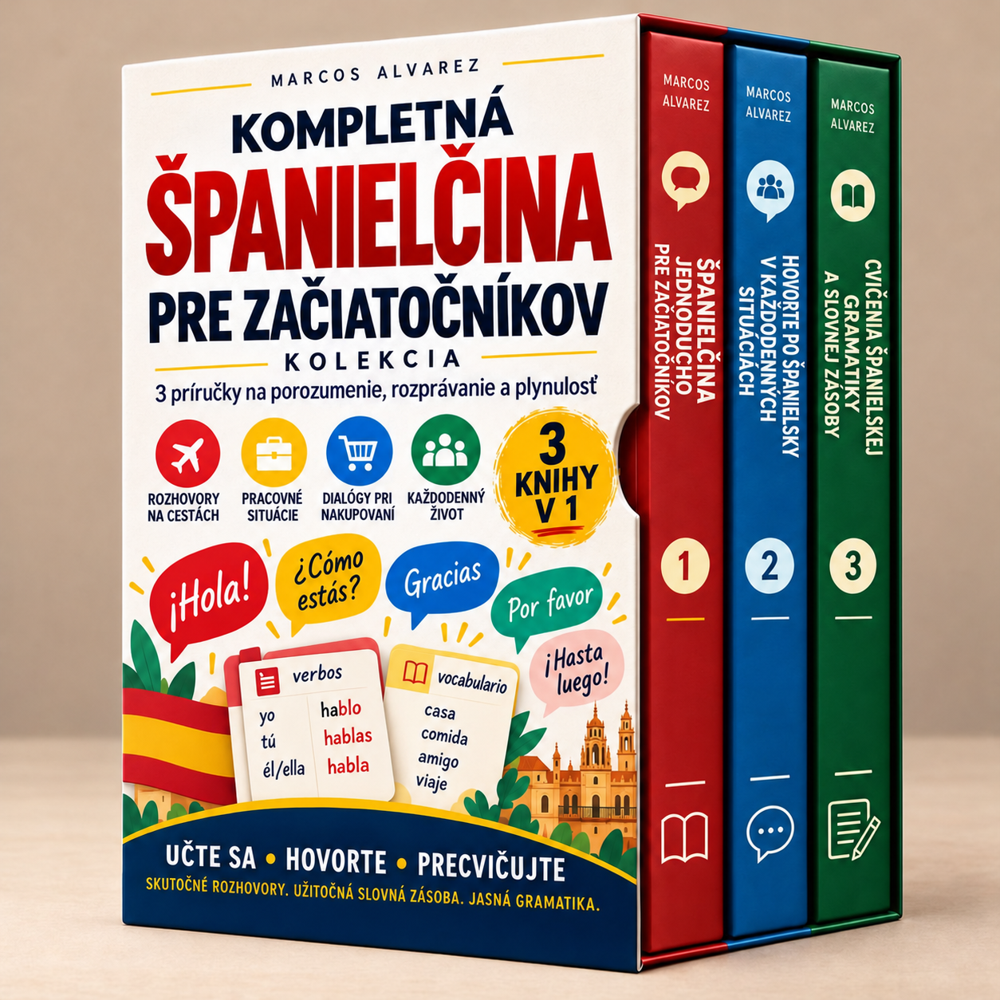

Začni od základov, precvičuj každodenné rozhovory a upevni si gramatiku aj slovnú zásobu.
Načítavajú sa študijné materiály…
Zapni JavaScript pre členskú sekciu alebo otvor knihy priamo pomocou odkazov nižšie.
Napísať e-mail